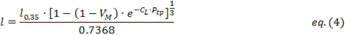

Pulmonary Circulation Model
Version X
Created by: Z. Bshouty, MD, PhD, FRCPC
This program simulates the behavior of the human pulmonary circulation. A computer model of the normal pulmonary circulation based on animal (dog) data was previously developed by Bshouty and Younes (1, 2). The original model was a multibranch model that bifurcated sequentially starting from the pulmonary artery (PA) up to eight (four generations) precapillary and capillary channels. The model was later modified to simulate the human pulmonary circulation based on 5 generations (3). Currently the user has the option of using either five or fifteen generations ending in either sixteen or 16,384 precapillary and capillary parallel channels, respectively. On the venous side, the vessels converge and reunite sequentially to end in the left atrium (LA).
Each extra-alveolar vessel in the model is divided into 10,000 segments. The resistance of each segment is dependent on segment cross-sectional area and length. Cross-sectional area of each arterial (Aa) and venous (Av) segment is calculated based on the transmural pressure (Ptm) across that segment, Ptm being intravascular (Pv) minus perivascular pressure (Px). Changes in lung volume affect vessel segment length and Px, and changes in Pv affect Px.
The characteristic behavior of Aa as a function of Ptm was derived from data obtained by Smith and Mitzner (5) and described in detail by Bshouty and Younes(1). It is expressed by the following linear relationship,
eq.(1)
Where A[a(0,35)] is cross sectional area of a given arterial vessel segment defined at a transpulmonary pressure [Ptp; Ptp being alveolar pressure (Pal) minus pleural pressure (Ppl)] of zero and Ptm of 35 cm H2O (a reflection of vessel dimensions under standardized conditions), aa is 0.2008 and ba is 0.0228.
The characteristic behavior of Av as a function of Ptm was also derived from data obtained by Smith and Mitzner (4) and described in detail by Bshouty and Younes (1). It is expressed by the following curvilinear relationship,
 eq.(2)
eq.(2)
where A[v(0,35)] is cross sectional area of a given venous vessel segment defined at a Ptp of zero and Ptmof 35 cm H2O (again, a reflection of vessel dimensions under standardized conditions), av is 1.0006, bv is 2.4307, and cv is 0.2355. Perivascular pressures of the first (5-generation model) and first three (15-generation model) pulmonary arterial and venous generations (extraalveolar extraparenchymal vessels) are assumed equal to Ppl. The relationship between Px of extra-alveolar intraparenchymal vessels and Pv was also derived from data obtained by Smith and Mitzner (5). The following relationship was used for both arteries and veins,

Parameters a, b, and c are dependent on whether the vessel segment is arterial or venous and all three parameters vary linearly with Ptp (1).
Vessel segmental lengths (l) of the extraparenchymal vessels are assumed constant and independent of lung volume. The segmental length of extraalveolar intraparenchymal vessels are exclusively a function of lung volume and hence, Ptp and lung compliance (CL). This relationship was also derived from data obtained by Smith and Mitzner (4). The following relationship is used for both arteries and veins,

where l0,35 is vessel segment length at a Ptp of zero (again a reflection of vessel characteristics under standardized conditions), VM is minimal lung volume (at Ptp equals zero) as a fraction of total lung capacity TLC (1).
The characteristic behavior of the pulmonary capillary bed is modeled after the sheet model of Fung and Sobin (7, 8). Px for the capillary bed is assumed equal to Pal. Details of capillary resistance calculations, under different zone conditions, and recruitment and derecruitment at the capillary level were described in detail by Bshouty and Younes (2).
Pressures can be referenced to the LA level, top or bottom of the lungs. Pleural pressure for vessels above the LA decreases by 0.55 cm H2O per cm height and increases by the same amount for vessels below the LA (6). From dimensional changes, resistance of each segment is calculated assuming laminar flow. Total resistance of each vessel is calculated using numerical integration over the length of the vessel. The effect of gravity is accounted for by assigning the model a certain height. Baseline height is 20 cm representing an average adult lung height in the supine position. Flow in the model is assumed laminar and non-pulsatile.
The model was developed to represent 15 generations of pulmonary arteries between the main pulmonary artery and the capillaries and 15 generations of pulmonary veins between the capillaries and the left atrium according to Huang et al. (9). Each resistance in the model may be viewed not as a single vessel but representative of many vessels that reside at the same hydrostatic level. The first generation vessel (arterial and venous in the 5-generation model) represents the cumulative resistances of extraalveolar extraparenchymal vessels generations one to three. The second generation vessels in the model represent the cumulative resistances of extraalveolar intraparenchymal vessels generations four to six. Each generation in the model represents three generations in the human lung so that the fifth generation in the 5-generation model represents lung vessel generations thirteen to fifteen.
Although the wall structure of the pulmonary arteries varies considerably between the main pulmonary artery all the way down to the precapillary terminal arteries (10), the distensibility of the vessels is independent of vessel diameter (10, 11, 12, 13). Hence, the distensibilities of the arterial vessels are assumed equal across the arterial generations. Since a similar observation was seen in pulmonary veins (14), the distensibilities of the venous vessels across the venous generations are also assumed equal, under normal conditions.
Model Adaptation to Humans
The model was originally developed based on data obtained in open chested dogs. Lung compliance was changed to equal what is normally observed in humans (15) after correcting static compliance to liter (L) per cm H2O according to the following relationship,
where Ht is patient height in cm.
Since the vascular structure of the pulmonary circulation as seen on pathology is similar in both humans and dogs, the characteristic behavior (cross-sectional area as a function of Ptm, and vessel length as a function of lung volume) of extra-alveolar arteries and veins was kept the same. A similar assumption was used for the characteristic behavior of the capillary bed.
The longitudinal distribution of pulmonary vascular resistance along the vascular bed was based on data obtained by Huang et al. (9). An average diameter ratio of parent to child vessel of 1.56 is assumed for all pulmonary arteries and 1.58 for all pulmonary veins under normal conditions. An average length ratio of parent to child vessel of 1.49 is assumed for all pulmonary arteries and 1.50 for all pulmonary veins. An average branching ratio (child vessels to parent vessel) of 3.36 is used for all pulmonary arteries and 3.33 for veins. These ratios were obtained at a perfusion pressure of 3 cm H2O while alveolar gas pressure was maintained at 10 cm H2O and pleural pressure was zero (9). Based on the above, baseline vessel resistance of each vessel in each generation was calculated. Using the characteristic behavior of arteries and veins (equations 1, 2, and 4) baseline resistances were adjusted to the current model standardized conditions of Ptp of zero cm H2O and Ptm of 35 cm H2O.
Transition from the above dimensional characteristics to provide actual resistances along the pulmonary vascular bed is achieved by obtaining a PAPm of 15 mm Hg at a CO of 6.45 L/min (Cardiac index 3.38 L/min/m2) and a LAP of 5 mm Hg reflecting the normal pulmonary circulation in an adult subject 175 cm tall and weighing 75 kg (16). The contribution of capillary resistance to total resistance under these conditions is approximately 16% with the arterial and venous systems contributing equally to the remaining resistance (17). The model accepts a patient height range of 25 to 250 cm and a patient weight range of 2.5 to 250 kg. Baseline resistances in the model are adjusted automatically to accommodate different body sizes. This is achieved by assuming that at a normal cardiac index of 3.38, all subjects (irrespective of height and weight) with a normal pulmonary circulation have a PAPm of 15 mm Hg at a LAP of 5 mm Hg (16).
References
1. Bshouty Z, Younes M. Distensibility and pressure-flow relationship of the pulmonary circulation. I. Single-vessel model. J Appl Physiol 1990;68:1501-1513.
2. Bshouty Z, Younes M. Distensibility and pressure-flow relationship of the pulmonary circulation. II. Multibranched model. J Appl Physiol 1990;68: 1514-1527.
3. Bshouty Z. Vascular compromise and hemodynamics in pulmonary arterial hypertension: Model predictions. Can Resp J (in press)
4. Smith JC, Mitzner W. Analysis of pulmonary vascular interdependence in excised dog lobes. J Appl Physiol 1980;48(3):450-67.
5. Maloney JE, Rooholamini SA, Wexler L. Pressure-diameter relations of small blood vessels in isolated dog lung. Microvasc Res 1970;2(1):1-12.
6. Tawhai MH, Nash MP, Lin CL, Hoffman EA. Supine and prone differences in regional lung density and pleural pressure gradients in the human lung with constant shape. J Appl Physiol 2009;107(3):912-20.
7. Fung YC, Sobin SS. Elasticity of the pulmonary alveolar sheet. Circ Res 1972;30(4):451-69.
8. Fung YC, Sobin SS. Pulmonary alveolar blood flow. Circ Res 1972;30(4): 470-90.
9. Huang W, Yen RT, McLaurine M, Bledsoe G. Morphometry of the human pulmonary vasculature. J Appl Physiol 1996;81(5):2123-33.
10. Cox RH. Comparison of mechanical and chemical properties of extra- and intralobar canine pulmonary arteries. Am J Physiol 1982;242(2):H245-53.
11. al-Tinawi A, Madden JA, Dawson CA, Linehan JH, Harder DR, Rickaby DA. Distensibility of small arteries of the dog lung. J Appl Physiol 1991;71(5):1714-22.
12. Karau KL, Molthen RC, Dhyani A, Haworth ST, Hanger CC, Roerig DL, Johnson RH, Dawson CA. Pulmonary arterial morphometry from microfocal X-ray computed tomography. Am J Physiol Heart Circ Physiol 2001;281(6):H2747-56.
13. Molthen RC, Karau KL, Dawson CA. Quantitative models of the rat pulmonary arterial tree morphometry applied to hypoxia-induced arterial remodeling. J Appl Physiol 2004;97(6):2372-84.
14. al-Tinawi A, Clough AV, Harder DR, Linehan JH, Rickaby DA, Dawson CA. Distensibility of small veins of the dog lung. J Appl Physiol 1992;73(5):2158-65.
15. Galetke W, Feier C, Muth T, Ruehle KH, Borsch-Galetke E, Randerath W. Reference values for dynamic and static pulmonary compliance in men. Respir Med 2007;101(8):1783-9.
16. Jegier W, Sekelj P, Auld PA, Simpson R, McGregor M. The relation between cardiac output and body size. Br Heart J 1963;25:425-30.
17. Hakim TS, Michel RP, Chang HK. Partitioning of pulmonary vascular resistance in dogs by arterial and venous occlusion. J Appl Physiol 1982;52(3):710-5.